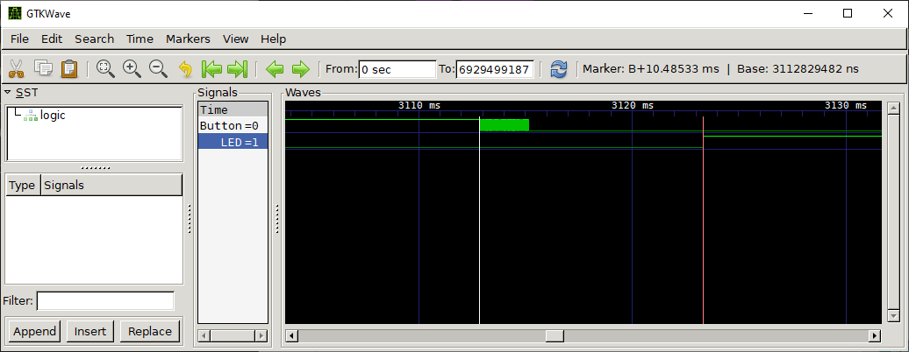

การเขียนโปรแกรม Arduino เพื่ออ่านค่าอินพุตจากปุ่มกดและปัญหา Switch Bouncing#
Keywords: Atmel AVR MCU, ATmega328P, Arduino Programming, Software-based Button Debouncing
▷ I/O Follower#
บทความนี้นำเสนอตัวอย่างโจทย์พื้นฐานสำหรับการฝึกเขียนโค้ดด้วยภาษา C/C++ โดยใช้คำสั่งของ Arduino (หรือเรียกว่า Arduino API) และเจาะจงเลือกใช้บอร์ดไมโครคอนโทรเลอร์ที่มีตัวประมวลผล 8 บิต ตระกูล AVR เช่น ATmega328P (สำหรับบอร์ด Arduino Uno หรือ Nano เป็นต้น)
โจทย์ตัวอย่างคือ การเขียนโปรแกรมเพื่อคอยอ่านค่าที่ขาอินพุตแบบดิจิทัล แล้วตรวจสอบดูค่าลอจิกที่ได้และนำไปกำหนดสถานะที่ขาเอาต์พุต ดังนั้นถ้ามีการเปลี่ยนแปลงลอจิกที่ขาอินพุต เอาต์พุตจะต้องเปลี่ยนแปลงตาม (จึงเรียกว่า Digital I/O Follower) โดยกำหนดให้มีความสัมพันธ์แบบ Inverse (การกลับค่า) ดังนั้นในกรณีนี้ โปรแกรมจะทำให้งานในลักษณะที่เป็นลอจิกเกตแบบ NOT (Software-based Logic Inverter)
เมื่อมีการเปลี่ยนแปลงที่ขาอินพุตจะส่งผลต่อการเปลี่ยนแปลงที่ขาเอาต์พุตตามมา และระยะเวลาในการตอบสนองต่อการเปลี่ยนแปลง (Response Latency) ก็ขึ้นอยู่กับความเร็วหรือความสามารถในการประมวลผลของซีพียู
▷ โค้ดตัวอย่างที่ 1: I/O Polling Loop#
ในตัวอย่างแรก จะเห็นได้ว่า ในฟังก์ชัน setup(){...} มีการใช้คำสั่ง pinMode()
เพื่อกำหนดทิศทางของขา D2 ให้เป็นขาดิจิทัลอินพุต
(และเปิดใช้งานตัวต้านทานภายในแบบ Pullup) และ D13 เป็นขาเอาต์พุต ตามลำดับ
ในฟังก์ชัน loop(){...} มีคำสั่งที่จะต้องทำซ้ำ และมีเพียงคำสั่งเดียวในตัวอย่างนี้ คือ
คำสั่ง digitalRead(...) อ่านอินพุตที่ขา D2
แล้วนำมากลับค่าลอจิก (ด้วยโอเปอร์เรเตอร์ ! หรือ Logical NOT)
และนำไปใช้อัปเดตค่าที่ขาเอาต์พุต D13 โดยใช้คำสั่ง digitalWrite(...)
void setup() {
// configure D2 pin as input with internal pullup
pinMode( 2, INPUT_PULLUP );
// configure D13 pin as output
pinMode( 13, OUTPUT );
}
void loop() {
int new_value = !digitalRead( 2 );
digitalWrite( 13, new_value );
}
หากนำโค้ดตัวอย่างนี้ไปทดลองกับอุปกรณ์ฮาร์ดแวร์จริง ก็ต้องหาวิธีการกำหนดค่าอินพุต ซึ่งก็สามารถทำได้โดยการสร้างวงจรปุ่มกด (Push Button / Tactile Switch) นำมาต่อเพิ่มบนเบรดบอร์ด (เช่น ต่อปุ่มกดแบบ Active-Low) เพื่อสร้างสัญญาณอินพุตแล้วป้อนเข้าที่ขา D2 ในขณะที่ขา D13 มีวงจร LED ใส่ไว้บนบอร์ดแล้ว
ตัวอย่างการต่อวงจรบนเบรดบอร์ดมีดังนี้
รูป: การต่อวงจรปุ่มกดบนเบรดบอร์ดร่วมกับบอร์ด Arduino Uno แบบ Active-High (Source: Arduino.cc)
รูป: ตัวอย่างผังวงจรปุ่มกดที่ทำงานแบบ Active-High และมีตัวต้านทานภายนอก 10kΩ แบบ Pulldown (Source: Arduino.cc)
รูป: ตัวอย่างการต่อวงจรทดลองจริงโดยใช้บอร์ด Arduino Nano 3.0 (วงจรปุ่มกดที่ทำงานแบบ Active-Low โดยใช้ตัวต้านทานแบบ Pull-up ของขา I/O ที่อยู่ภายในชิป)
อย่างไรก็ตามเพื่อให้เห็นการเปลี่ยนแปลงที่เกิดขึ้นที่ขาอินพุตและขาเอาต์พุตตามลำดับ การใช้เครื่องมือวัดอย่างเช่น ออสซิลโลโสโคปแบบดิจิทัล (Digital Oscillscope) หรือ เครื่องมือวิเคราะห์สัญญาณดิจิทัล (Logic Analyzer) จึงเป็นสิ่งสำคัญในการทดลอง
นอกจากนั้นแล้ว การใช้วงจรปุ่มกดและวัดสัญญาณการเปลี่ยนแปลงเชิงเวลาโดยใช้ออสซิลลโสโคป จะทำให้เห็นลักษณะของสัญญาณอินพุตจริงที่ถูกป้อนเข้าสู่วงจรภายในไมโครคอนโทรลเลอร์ผ่านทางขาดิจิทัล
การกดปุ่มแล้วปล่อยโดยทั่วไปแล้ว อาจมีการกระเด้งของปุ่มกดเกิดขึ้น (Button Bouncing) ทำให้เกิดการเปลี่ยนแปลงของระดับแรงดันไฟฟ้าหรือค่าลอจิกของสัญญาณอินพุตหลายครั้งในช่วงเวลาสั้น ๆ
ลองมาดูตัวอย่างสัญญาณที่วัดได้จริง (วัดสัญญาณโดยใช้เครื่องออสซิลโลสโคปแบบดิจิทัล Rigol DS1054Z)

รูป: แสดงรูปคลื่นสัญญาณช่วงที่อินพุตเปลี่ยนจากลอจิก LOW เป็น HIGH ช่อง (1) เป็นสัญญาณอินพุตที่ขา D2 รับมาจากวงจรปุ่มกด และช่อง (2) เป็นสัญญาณเอาต์พุตที่ขา D13

รูป: เปลี่ยน Time Resolution จาก 100us /div เป็น 5us /div
หากขยายแกนเวลาของรูปคลื่นสัญญาณ จะเห็นได้ชัดเจนมากขึ้น เมื่ออินพุตเปลี่ยนแปลงระดับจาก 10% ไปยัง 90% ของ VCC=+5V จะมีช่วงเวลาขาขึ้น (Rise Time) และเมื่ออินพุตเปลี่ยนจากลอจิก 0 เป็น 1 แล้ว จะทำให้เอาต์พุตเปลี่ยนแปลงตาม (เปลี่ยนจากลอจิก 1 เป็น 0) ทั้งสองเหตุการณ์มีระยะเวลาห่างกันประมาณ 5 us (ไมโครวินาที)
สัญญาณจากวงจรอินพุต หากไม่มีการกดปุ่ม จะได้ค่าลอจิกเป็น HIGH (1) หรือมีแรงดันไฟฟ้าประมาณ 5V สำหรับกรณีตัวอย่างนี้ แต่ถ้ามีการกดปุ่มในช่วงเวลาดังกล่าว ค่าลอจิกที่ได้จะเปลี่ยนเป็น LOW (0) และเมื่อปล่อยปุ่ม ก็จะกลับไปเป็นลอจิก HIGH เหมือนเดิม หากพิจารณาดูความสัมพันธ์เชิงลอจิกระหว่างสัญญาณอินพุตและเอาต์พุต ก็พบว่า เป็นแบบกลับค่าตามที่กำหนดไว้โดยฟังก์ชันการทำงานของโค้ดตัวอย่าง

รูป: แสดงรูปคลื่นสัญญาณอินพุตและเอาต์พุต เมื่อมีการกดแล้วปล่อยปุ่ม
แต่หากสังเกตดูคลื่นสัญญาณอินพุตที่วัดได้จริงโดยใช้เครื่องออสซิลโสโคป จะพบว่า มีช่วงเวลาสั้น ๆ ที่มีการเปลี่ยนแปลงสัญญาณอย่างรวดเร็ว เหมือนมีสัญญาณรบกวน การเปลี่ยนแปลงในลักษณะนี้ เกิดจากการกระเด้งของปุ่มกดเมื่อถูกกดแล้วปล่อย

รูป: กดปุ่มครั้งที่ 1 เกิดการกระเด้งของปุ่มกดหลายครั้ง ช่วงที่มีการปล่อยปุ่ม (ช่วงเปลี่ยนจาก LOW เป็น HIGH หรือขอบขาขึ้น)

รูป: กดปุ่มครั้งที่ 2 เกิดการกระเด้งของปุ่มกดหลายครั้ง ช่วงที่มีการปล่อยปุ่ม

รูป: กดปุ่มครั้งที่ 3 เกิดการกระเด้งของปุ่มกดหลายครั้ง ช่วงที่มีการปล่อยปุ่ม
จากรูปสัญญาณที่วัดได้จริงและนำมาเป็นตัวอย่าง จะเห็นได้ว่า การกดปุ่มแล้วปล่อยในแต่ละครั้ง อาจให้ผลแตกต่างกัน ดังนั้นจากตัวอย่างนี้ การต่อวงจรปุ่มกดและอ่านค่าอินพุต ควรจะต้องพิจารณาปัญหาที่เกิดจากการกระเด้งของปุ่มกดหลายครั้งด้วย
บนเว็บไซต์ของ Arduino มีตัวอย่างการเขียนโค้ดเป็นแนวทางเพื่อรับมือกับปัญหานี้ (Button Debounce)
▷ โค้ดตัวอย่างที่ 2: Interrupt-Driven Callback#
จากตัวอย่างที่ 1 เราสามารถเขียนโปรแกรมให้แตกต่างจากเดิมได้ เช่น การเปิดใช้งานส่วนที่เรียกว่า อินเทอร์รัพท์ (Interrupt) ซึ่งเกิดจากเหตุการณ์ภายนอก (External Interrupt) ในกรณีนี้คือ การเปลี่ยนแปลงลอจิกที่ขาอินพุต
ชิป ATmega328P มีขา I/O ที่ใช้งานร่วมกับอินเทอร์รัพท์จากเหตุการณ์ภายนอกได้ 2 ขา คือ Arduino D2 Pin (PD2 pin) และ Arduino D3 Pin (PD3 pin) ซึ่งตรงกับอินเทอร์รัพท์ภายนอกหมายเลข 0 และ 1 ตามลำดับ
โค้ดตัวอย่างที่ 2:
#define BTN_PIN (2) // D2 pin
#define LED_PIN (13) // D13 pin
void setup() {
pinMode( BTN_PIN, INPUT_PULLUP );
pinMode( LED_PIN, OUTPUT );
// use an anonymous function for callback
attachInterrupt(
digitalPinToInterrupt(BTN_PIN),
[](){
digitalWrite( LED_PIN, !digitalRead(BTN_PIN) );
}, CHANGE );
}
void loop() {
}
การเปิดใช้งานอินเทอร์รัพท์ภายนอกสำหรับบอร์ด Arduino ก็ทำได้โดยการใช้คำสั่งของ Arduino API:
attachinterrupt(...) และให้เลือกขาดิจิทัล D2 (INT.0) หรือ D3 (INT.1) สำหรับ ATmega328P
การใช้คำสั่ง digitalPinToInterrupt(...) จะช่วยระบุว่า ขาที่เลือกใช้นั้นตรงกับอินเทอร์รัพท์ภายนอกที่หมายเลขใด
(เรียกว่า External Interrupt Number)
อีกทั้งต้องระบุประเภทของเหตุการณ์ หรือ โหมดการทำงาน ได้แก่ ขอบขาขึ้น (RISING) ขอบขาลง (FALLING) หรือทั้งสองกรณีก็ได้ (CHANGE)
ฟังก์ชัน attachInterrupt(...) สำหรับเปิดใช้งาน
และ detachInterrupt(...) สำหรับปิดอินเทอร์รัพท์ภายนอกที่ขาอินพุต ถูกสร้างไว้ในไฟล์
WInterrupts.c ของ
Arduino Core for AVR
void attachInterrupt(
uint8_t interruptNum,
void (*userFunc)(void),
int mode );
void detachInterrupt( uint8_t interruptNum );
เมื่อเกิดเหตุการณ์อินเทอร์รัพท์ภายนอกในแต่ละครั้ง จะมีการเรียกฟังก์ชันที่เกี่ยวข้อง หรือเรียกว่า User-defined Callback Function ทำหน้าที่เป็น ISR (Interrupt Service Routine)
ข้อสังเกต: ชิปไมโครคอนโทรลเลอร์บนบอร์ด Arduino ที่แตกต่างกัน มีจำนวนหมายเลขอินเทอร์รัพท์ภายนอกแตกต่างกันได้
ตาราง: เปรียบเทียบความแตกต่างในการใช้งานขาอินพุต-ดิจิทัลของบอร์ด Arduino สำหรับคำสั่ง attachInterrupt()
เช่น จำนวนขาและหมายเลขขาที่เลือกใช้ได้ (Source: Arduino.cc)
▷ ตัวอย่างที่ 3: Software-based Button Debouncing#
ตัวอย่างถัดไปเป็นการสาธิตวิธีการลดปัญหาปุ่มกระเด้งที่ทำให้เกิดสัญญาณแบบพัลส์ช่วงสั้น ๆ เทคนิคที่ใช้คือ
การวนลูปคอยอ่านค่าลอจิกที่ขาอินพุต (Input Sampling)
เว้นระยะห่างคงที่ เช่น ทุก ๆ 2 มิลลิวินาที แล้วเก็บบันทึกค่าลอจิกเอาไว้ในตัวแปร sampled_bits
โดยมีลักษณะเลื่อนบิตเข้าไปเก็บในตำแหน่ง LSB (Least Significant Bit)
และเลื่อนบิตก่อนหน้านั้นไปทางซ้ายทีละหนึ่งตำแหน่ง ขนาดข้อมูลที่ใช้เก็บค่าบิตเหล่านี้ เท่ากับ 8 บิต (ใช้ชนิดข้อมูลเป็นแบบ
uint8_t)
ถ้าค่าบิตในตัวแปร sampled_bits มีค่าเท่ากับ 0b0000000 (เลขฐานสอง) หรือ ทุกบิตเป็น 0 ก็หมายความว่า ช่วงเวลาที่ผ่านมาและมีการสุ่มอ่านค่าอินพุต 8 ครั้งล่าสุด สัญญาณอินพุตคงที่ (Stable) และเป็น LOW ดังนั้นเอาต์พุตจะต้องเป็น HIGH
แต่ถ้าตัวแปรมีค่าเท่ากับ 0b11111111 (เลขฐานสอง) หรือ ทุกบิตเป็น 1 ก็หมายความว่า ช่วงเวลาที่ผ่านมานั้น สัญญาณอินพุตคงที่
และเป็น HIGH ดังนั้นเอาต์พุตจะต้องเป็น LOW
แต่ถ้าตัวแปร sampled_bits มีบิตทั้งเป็น 0 หรือ 1 แสดงว่า เกิดการเปลี่ยนแปลงชั่วขณะ ดังนั้นในช่วงเวลาดังกล่าว จึงไม่ต้องอัปเดตค่าลอจิกของเอาต์พุต เป็นวิธีกรองเหตุการณ์ (Event Filtering) ที่เกิดกระเด้งของปุ่มกดซึ่งไม่เป็นที่ต้องการ
#define BTN_PIN (2)
#define LED_PIN (13)
#define INTERVAL_MS (2)
// global variable
uint32_t ts; // used to save timestamp (in msec)
void setup() {
pinMode( BTN_PIN, INPUT_PULLUP );
pinMode( LED_PIN, OUTPUT );
digitalWrite( LED_PIN, LOW );
ts = millis();
}
void loop() {
static uint8_t sampled_bits = 0xff;
if ( millis() - ts >= INTERVAL_MS ) {
ts += INTERVAL_MS;
sampled_bits = (sampled_bits<<1) | (digitalRead(BTN_PIN) & 1);
if (sampled_bits==0x00) {
digitalWrite( LED_PIN, HIGH );
} else if (sampled_bits==0xff) {
digitalWrite( LED_PIN, LOW );
}
}
}
มาลองดูตัวอย่างสัญญาณอินพุตและเอาต์พุตจากการทดลองโดยใช้ฮาร์ดแวร์จริง

รูป: การกดปุ่มแล้วปล่อยหนึ่งครั้ง

รูป: สัญญาณอินพุตที่มีขอบขาลงซึ่งเกิดจากการกดปุ่ม แต่มีการกระเด้งของปุ่มและทำให้เกิดสัญญาณพัลส์ตามมา แต่สัญญาณเอาต์พุตยังคงระดับเดิม ยังไม่เปลี่ยนแปลง (พัลส์ที่เกิดขึ้นถูกกรองด้วยวิธีการซอฟต์แวร์)

รูป: สัญญาณอินพุตและเอาต์พุตในช่วงเวลาที่มีการกดปุ่มแล้วปล่อย สองครั้งถัดกัน (Double Click)
ข้อสังเกต: การแเก้ปัญหาที่เกิดจากปุ่มกระเด้งด้วยวิธีการซอฟต์แวร์ ก็ช่วยได้ระดับหนึ่ง นอกจากนั้นแล้วยังมีวิธีการแก้ปัญหาเชิงฮาร์ดแวร์ เช่น การใช้ลอจิกเกตประเภท Schmitt-Trigger หรือการใช้วงจร RC Filter (Passive Low-Pass Filter) หรือใช้ไอซีที่มีหน้าที่นี้โดยเฉพาะ (เรียกว่า Switch Debouncer IC) เช่น Maxim MAX681x (datasheet)

รูป: วงจร RC และลอจิกเกต Schmitt-Trigger Inverter (Source: Texas Instruments)
▷ ตัวอย่างที่ 4: C++ Class for Button Debouncing#
จากโค้ดตัวอย่างที่แล้ว เราลองมาสร้างคลาส C++ (ใช้ชื่อคลาส Button)
สำหรับเอาไว้ใช้งานกับอินพุตที่มาจากวงจรปุ่มกด เป็นตัวอย่างดังนี้
File: Button.h
/////////////////////////////////////////////////////
// File: Button.h (C++ Class: Button)
/////////////////////////////////////////////////////
class Button { // Input Button with Debouncing Logic
public:
Button( int pin, bool pullup=false, int interval_ms=2 ) {
_pin = pin;
pinMode( _pin, pullup ? INPUT_PULLUP : INPUT );
_sampled_bits = 0xff;
clear();
_interval_ms = interval_ms;
_ts = millis();
}
void update() {
uint32_t now = millis();
if ( millis() - _ts >= _interval_ms ) {
_ts = now;
_sampled_bits = (_sampled_bits<<1) | (digitalRead(_pin) & 1);
if (_sampled_bits==0xf0) {
_falling_edge = true;
}
else if (_sampled_bits==0x0f) {
_rising_edge = true;
}
}
}
bool has_changed_rising() {
return _rising_edge;
}
bool has_changed_falling() {
return _falling_edge;
}
void clear() {
_rising_edge = false;
_falling_edge = false;
}
private:
int _pin;
uint8_t _sampled_bits = 0xff;
uint32_t _interval_ms, _ts;
bool _rising_edge;
bool _falling_edge;
};
File: button_debouncer_demo.ino
/////////////////////////////////////////////////////
// Demo code for the Button C++ class
/////////////////////////////////////////////////////
#include "Button.h"
#define BTN_PIN (2)
#define LED_PIN (13)
Button btn( BTN_PIN, true ); // create a Button instance
void setup() {
pinMode( LED_PIN, OUTPUT );
digitalWrite( LED_PIN, LOW );
}
void loop() {
btn.update(); // must be called regularly.
if (btn.has_changed_falling()) {
btn.clear();
digitalWrite( LED_PIN, HIGH );
}
if (btn.has_changed_rising()) {
btn.clear();
digitalWrite( LED_PIN, LOW );
}
}
จากตัวอย่าง ตัวแปร btn อ้างอิงอ็อบเจกต์ที่ถูกสร้างขึ้นมาจากคลาส Button และจะต้องมีการทำคำสั่ง
update() ของตัวแปร btn เพื่อตรวจสอบอินพุตสำหรับปุ่มกดเป็นระยะ ๆ
ถ้าหากต้องการตรวจดูว่า มีการเปลี่ยนแปลงเกิดขึ้นกับสถานะของอินพุต เช่น ขอบขาขึ้น หรือ ขอบขาลง
ให้ใช้คำสั่ง has_changed_rising() หรือ has_changed_falling()
และจากนั้นให้เคลียร์เหตุการณ์ที่ตรวจพบ โดยทำคำสั่ง clear() ของตัวแปร btn

รูป: ทดสอบการทำงานของโค้ดตัวอย่างโดยใช้ฮาร์ดแวร์จริง และวัดสัญญาณที่ได้
ถัดไปลองมาดัดแปลงโค้ดตัวอย่าง เพื่อสาธิตการนับจำนวนการกดปุ่มแล้วปล่อย และแสดงข้อความจำนวนครั้งที่นับได้ และมีการสลับสถานะของ LED เมื่อมีการกดปุ่มแล้วปล่อยในแต่ละครั้ง
File: button_click_counter.ino
#include "Button.h"
#define BTN_PIN (2)
#define LED_PIN (13)
Button btn( BTN_PIN, true ); // create a Button instance
void setup() {
Serial.begin( 115200 );
Serial.println( "Switch debouncer demo...\n" );
pinMode( LED_PIN, OUTPUT );
digitalWrite( LED_PIN, LOW );
}
String str;
uint8_t cnt = 0;
void loop() {
btn.update(); // must be called regularly.
if (btn.has_changed_falling()) {
btn.clear();
cnt++; // increment click counter by 1
str = "Clicks: ";
str += cnt;
Serial.println( str.c_str() );
}
if (btn.has_changed_rising()) {
btn.clear();
// toggle LED
digitalWrite( LED_PIN, !digitalRead(LED_PIN) );
}
}

รูป: ตัวอย่างข้อความเอาต์พุตที่ได้รับมาจากบอร์ดและปรากฎใน Arduino Serial Monitor
▷ ตัวอย่างที่ 5: Wokwi-based Arduino Simulator#
เราลองมาใช้โปรแกรมแบบออนไลน์ที่มีชื่อว่า Wokwi AVR Simulator
จำลองการทำงานหรือทดสอบการทำงานของโค้ดตัวอย่าง
จุดเด่นข้อหนึ่งของ Wokwi คือ เราสามารถเขียนโค้ด Arduino Sketch และจำลองการทำงานได้
และในกรณีที่ใช้วงจรปุ่มกดเป็นอินพุต (wokwi-pushbutton) เราสามารถตั้งค่าได้ว่า จะให้จำลองสถานการณ์ที่มีการกระเด้งของปุ่มด้วย หรือไม่ (bounce เป็น 0 หรือ 1)
รูป: ตัวอย่างการต่อวงจรเสมือนจริงโดยใช้บอร์ด Arduino Nano และปุ่มกดบนเบรดบอร์ด
ในการจำลองการทำงานของ Arduino โดยใช้ Wokwi Simulator เราสามารถนำอุปกรณ์ที่เรียกว่า Virtual Logic Analyzer มาใช้สำหรับตรวจสอบและบันทึกการเปลี่ยนแปลงของสัญญาณในระบบได้ บันทึกเป็นไฟล์ .vcd โดยอัตโนมัติ เมื่อจบขั้นตอนการจำลองการทำงาน แต่มีข้อจำกัดคือ ยังไม่สามารถแสดงรูปคลื่นสัญญาณได้ และต้องใช้โปรแกรมภายนอกสำหรับไฟล์ .vcd ที่ได้
จากการจำลองการทำงานและมีการกดปุ่มหลาย ๆ ครั้ง ลองมาดูตัวอย่างรูปคลื่นสัญญาณอินพุตและเอาต์พุตที่ได้
รูป: แสดงข้อมูลจากไฟล์ .vcd ที่ได้จากการจำลองการทำงาน โดยใช้โปรแกรม GTKwave และสังเกตได้ว่า มีการกดปุ่มแล้วปล่อยหลายครั้ง
รูป: ขยายแกนเวลา (Zoom-In) จะเห็นได้ว่า มีการเกิดเหตุการณ์การกระเด้งของปุ่มกด มีสัญญาณพัลส์หลายครั้งเกิดขึ้น
รูป: ทดลองโค้ดตัวอย่างที่มีการแก้ปัญหาการกระเด้งของปุ่มกด

รูป: สังเกตเห็นได้ว่า เมื่อมีการกดปุ่มและสัญญาณเปลี่ยนจาก HIGH เป็น LOW มีเหตุการณ์การกระเด้งของปุ่มกด แต่สัญญาณเอาต์พุตจะไม่เปลี่ยนแปลงตามทันที มีการกรองเหตุการณ์ดังกล่าวเอาไว้ และเกิดการเปลี่ยนแปลงของเอาต์พุต ประมาณ 10 ms หลังจากนั้น
▷ กล่าวสรุป#
บทความนี้นำเสนอตัวอย่างการเขียนโค้ดสำหรับใช้งานขา GPIO ของบอร์ด Arduino เป็นอินพุตและเอาต์พุตแบบดิจิทัล และกำหนดให้โปรแกรมตัวอย่างมีหน้าที่คอยตรวจสอบการเปลี่ยนแปลงสถานะลอจิกที่ขาอินพุตเพื่อนำไปอัปเดตสถานะลอจิกที่ขาเอาต์พุต โดยใช้สองวิธี คือ I/O Polling Loop และ External Interrupt Handling อีกทั้งได้ยกตัวอย่างปัญหาที่เกิดจากการกระเด้งของปุ่มกดที่ใช้เป็นอินพุต และตัวอย่างการแก้ปัญหา
This work is licensed under a Creative Commons Attribution-ShareAlike 4.0 International License.
Created: 2022-01-20 | Last Updated: 2022-02-19